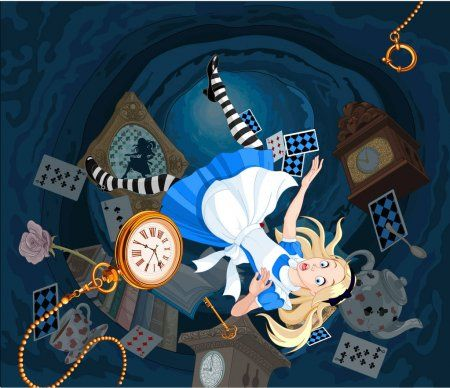

Bem-vindo ao País das Maravilhas! Você é Alice e caiu na toca do coelho, agora suas escolhas determinarão sua aventura. Você encontra o Chapeleiro Maluco que lhe pergunta: "O que você esta procurando, Alice?". Vamos começar esta jornada!!
Em sua procura ao Castelo da Rainha Vermelha você:
Ao seguir em frente no Caminho dos Espelhos, você:
Os guardas te levaram a Rainha Vermelha, e como pinição por tentar envadir seu castelo... ela mandou corta-lhe cabeça
Depois de aceitar a ajuda do Gato risonho, você: